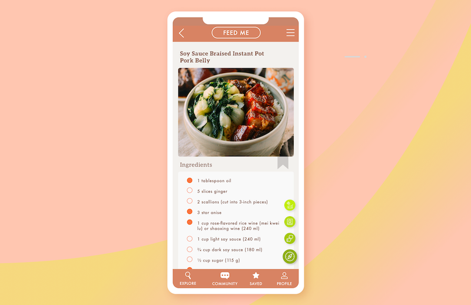

Feed Me was a practice design for me. I wanted to challenge myself to create an app different from the ones I make for my job- masculine oriented, sports betting apps. Feed me is a community recipe aggregator. Users can upoload their own recipes, review others and find the perfect meal for their needs.
One of the biggest problems with recipe apps and using digital recipes is scrolling with messy hands. Cooking is a hands on process and often it can leave your hands covered in spices, sauces, oils, and more. Touchscreens don't work well with the mess of the kitchen, users don't want to get their phones dirty by touching them and the stuff on their hands makes it difficult for the screen to track their scrolls accurately. Additionally, the mobile format forces what would be short recipes to appear longer, and long recipes are almost like medieval scrolls due to the smaller screen. Users don't want to have to scroll for three minutes to find the reviews at the bottom on the recipe, or to get to ingredients when they are reading the instructions.
As a response, I created a floating menu on the right hand side that allows the user to jump sections in the recipe page. Pressing the review button will auto-jump the user to the review section. Pressing the ingredients or recipe buttons do the same. This enables the user to quickly skim recipes and increases interaction with the app.
